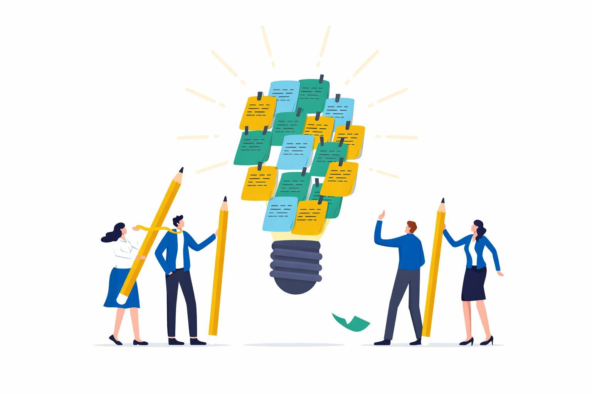
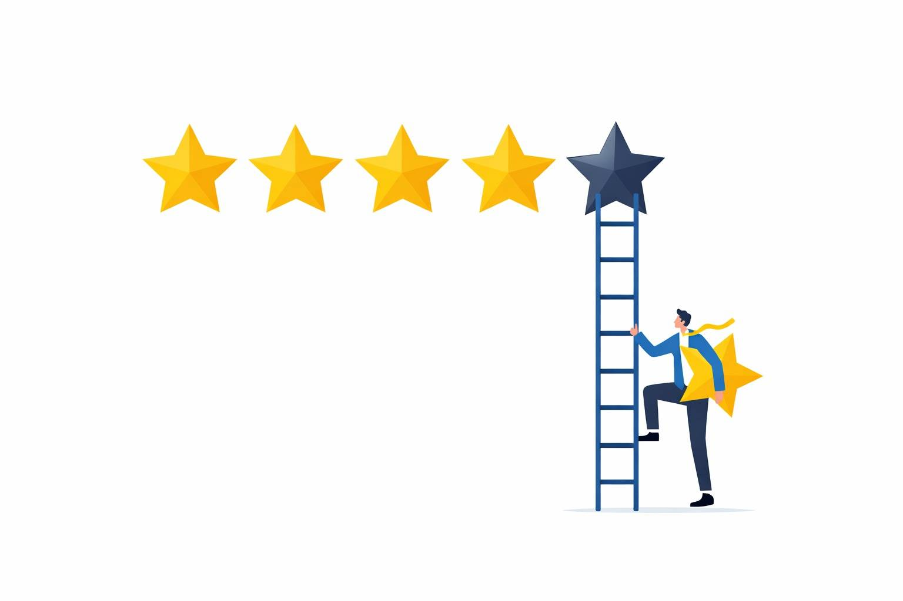
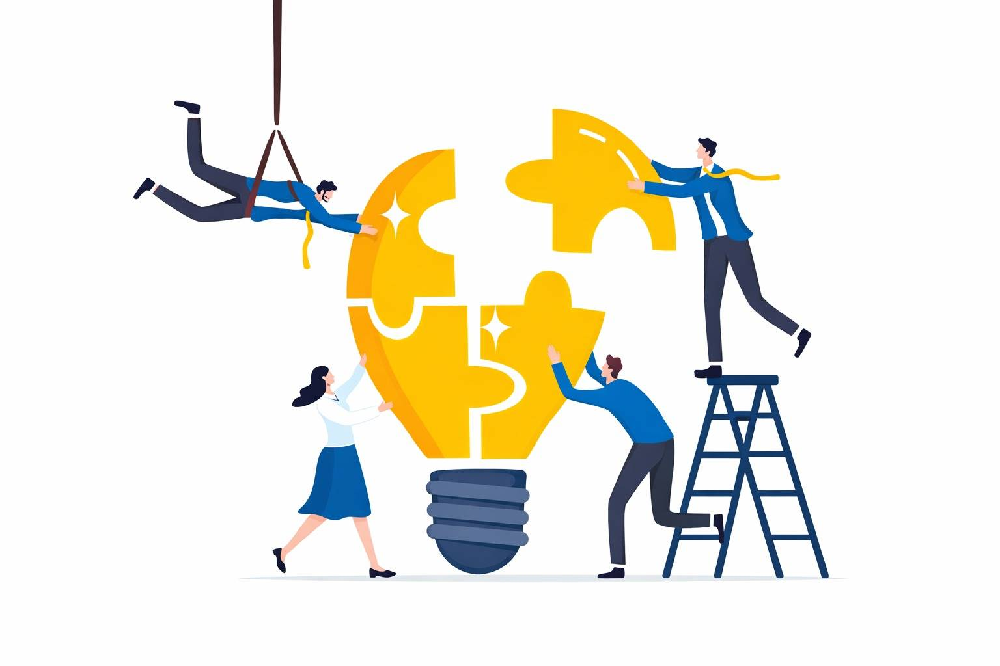

A practical guide to what each ranking requires — and how to write a qualifying initiative or news item that actually counts.

🏛About the PortalUniversity rankings don't evaluate themselves. Behind every QS or THE score is a year of data collection — hundreds of answers, documents, URLs, and evidence parcels gathered from across 12 departments. Without a coordinated system, critical data gets lost in email threads, submitted late, or never collected at all. This portal solves that.
The world's most widely consulted university ranking. Evaluates institutions across 9 indicators combining global reputation surveys, Elsevier Scopus citation data, and internationalisation metrics.

🌍QS World University RankingsThe first major ranking dedicated entirely to ESG impact. Launched in 2023, it evaluates universities across 8 categories. UoB's most data-intensive submission — 35+ question groups and 100+ sub-indicators covering environmental, social, and governance performance.
Times Higher Education's flagship ranking evaluates research-intensive universities across 5 pillars and 18 indicators. Research quality is measured using Field-Weighted Citation Impact (FWCI) from Elsevier Scopus — one of the most rigorous citation methodologies in global rankings.

🎓THE World University RankingsThe only global ranking measuring universities against all 17 UN SDGs. Score = SDG 17 Partnerships (22%, mandatory) + best 3 of the remaining 16 SDGs (78%). Open to any university — no minimum research requirement.
The world's first campus sustainability ranking by Universitas Indonesia. Evaluates physical campus operations across 6 categories and 61 indicators. Everything must be measurable and campus-based. 2025 theme: "Doing SDGs in Higher Education."
QS WUR, QS Sustainability, THE WUR, THE Impact, and UI GreenMetric each demand different data from different departments — on different deadlines. This portal ensures every indicator is assigned to the right team, tracked in real time, and submitted on time. Log in to view your department's current tasks.